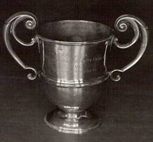

The George Cockshott (Wiki link) Cup – AKA Eurynome Bowl
Early Oxford Cambridge Match Racing Varsity Match History
The very first Oxford Cambridge match racing Varsity Match was held on the river at Ely in 1912. However, it became a team race the following year when it was held at Oxford. For historic convenience, the 1912 match is listed as part of the main Varsity Match history. As a result, this match racing Varsity Match history starts with the first modern Varsity match race held at the Royal Southern YC, Hamble in July 2014.
Trophies and Blues
Two CUCrC cups have been re-purposed for the modern Varsity Match Racing Match: the George Cockshott[ext-link] (Wiki link) Cup – AKA Eurynome Bowl – for the First Team; and the Challenge Cup for the Second Team. The event does not yet have Half Blue status.
An historic list of Cambridge teams is maintained on the History[ext-link] pages of the CUCrC Student, Alumni, News, History website. There is currently no online list of Oxford teams.
So far Cambridge have won the main match twice and Oxford one; Oxford have won the 2nd team match twice and Cambridge once.
| Year | George Cockshott Cup | Score | Challenge Cup | Score | Place |
|---|---|---|---|---|---|
| 2022 | Oxford | 2-1 | Oxford | 2-1 | Royal Harwich YC |
| 2020-21 | COVID | - | COVID | - | - |
| 2019 | Cambridge | 4-0 | Cambridge | 4-1 | Aldeburgh YC |
| 2015-19 | Not sailed | Not sailed | - | ||
| 2014 | Cambridge | Oxford | Royal Southern YC |